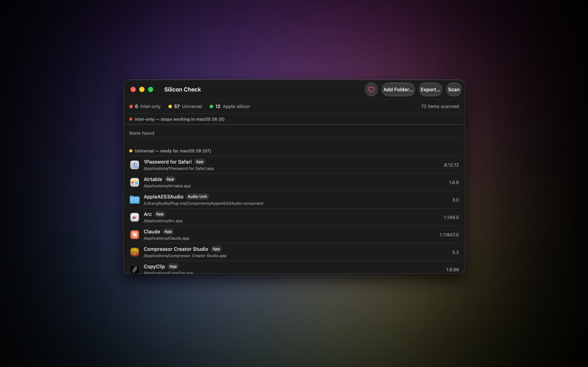
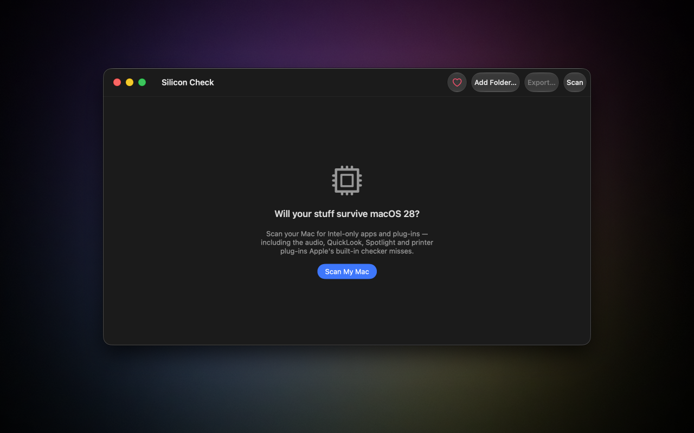
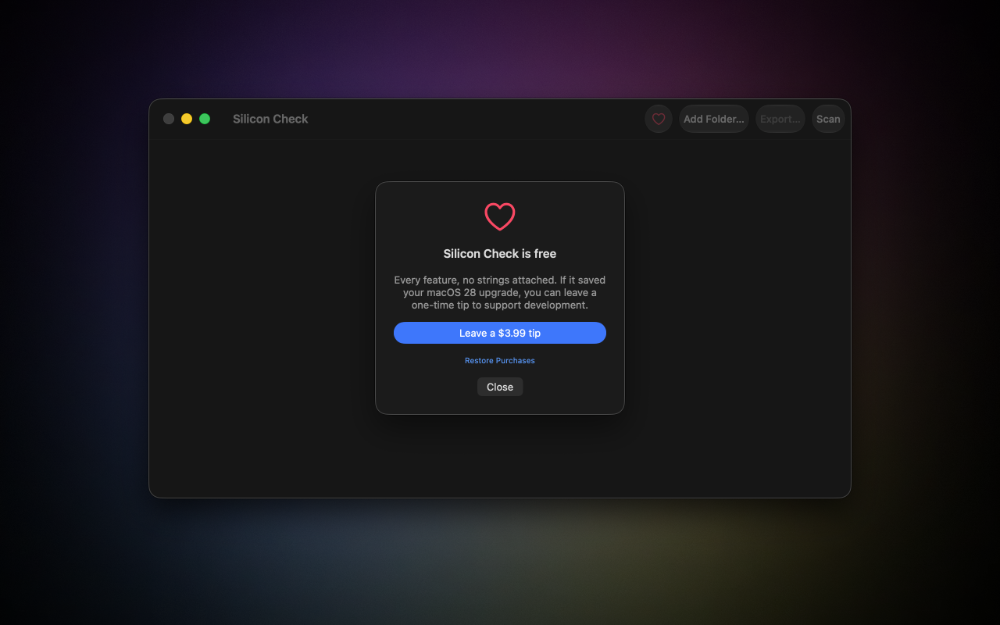

Reads the binary, not a database
Silicon Check inspects each app's actual Mach-O header — arm64, Intel, or universal — so the verdict is exact, not a guess from a list someone maintains.
macOS 28 drops Intel support and retires Rosetta — every Intel-only app and plug-in simply stops opening. Silicon Check scans your Mac and tells you exactly what breaks, before you upgrade.

The gap Apple won't tell you about
System Settings lists your Intel apps. It quietly skips your plug-ins — and those stop working too. Silicon Check reads every Mach-O binary on disk, so nothing slips through.
What's inside
Silicon Check inspects each app's actual Mach-O header — arm64, Intel, or universal — so the verdict is exact, not a guess from a list someone maintains.
For every Intel-only item, see when you last opened it, how much space it's hogging, and whether an Apple-silicon version is already on the App Store.
Save the full results as CSV to plan your upgrade, hand to IT, or keep as a checklist of what to replace.
Everything runs on your Mac with read-only access you grant. No account, no analytics, nothing about you or your files ever leaves the machine.
A closer look
Specimen 01 — the question
Open Silicon Check, hit Scan, and grant read-only access to your apps and plug-in folders. No setup, no configuration.

Specimen 02 — the answer
Everything sorts into Intel-only, Universal, and Apple-silicon — with icons, versions, and the exact path for each item, so you know precisely what's at risk.
Specimen 03 — the deal
Every feature is free, with no strings attached. If Silicon Check saved your upgrade, you can leave a one-time tip — but you never have to.

How it works
Launch the app — it weighs almost nothing and runs on Intel and Apple-silicon Macs alike.
Grant read-only access and let it read every app and plug-in binary on disk.
Update, replace, or delete what won't survive — then move to macOS 28 with no surprises.
macOS 28 is coming
Find the Intel apps and plug-ins that won't make the jump — while you still have time to do something about it.